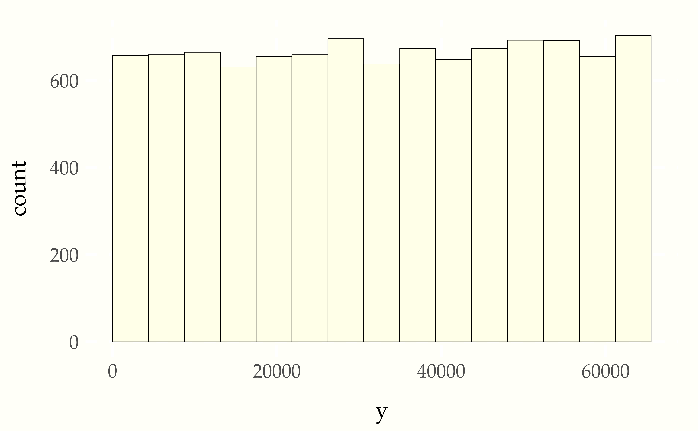

We have been assuming so far that we have pseudorandom number generators that work in some sense to simulate true randomness. This chapter clarifies what that means and shows how we gain confidence in our random number generator’s randomness through testing various hypotheses that it’s random against the actual results produced.
To provide a feel for what a (weak) pseudorandom number generator looks like, we’ll start with a very simple one. Starting from an initial random number seed \(s\), the linear congruential pseudorandom number generator does a linear transform and then reduces the number modulo \(M\) to generate an integer in the range \(0, 1, \ldots, M - 1\).155 The modulus operator is defined so that \(m \bmod n\) is the remainder after dividing \(m\) by \(n\). For example, \(5 \bmod 2 = 1\) and \(6 \bmod 3 = 0\). The sequence of random numbers generated, \(y_0, y_2, \ldots\), is defined inductively based on an integer seed \(m\), integer multiplier \(\alpha\), and integer increment \(\beta\), by the base case
\[ y_0 = s \bmod M \]
and inductive case
\[ y_{n + 1} = \left( \alpha \times y_n + \beta \right) \bmod M. \]
The pseudocode for generating the next random number given the previous random number is a one-liner.156 Such a function is typically set up as an iterator with either object-encapsulated or static storge of its arguments.
next_prng(seed, M, alpha, beta)
return (alpha * last_y + beta) mod MWe will conveniently choose \(M = 2^16\) to provide 16-bit integer results.157 We are implementing these algorithms in R, which has the serious limitation of restricting user integer values to short, 32-bit values.
To make sure this works to rotate through all \(M\) possible values, we need \(\beta\) to be relatively prime to \(M\). So we’ll just set \(a = 123\) and and \(b = 127\) and start with a seed of \(s = 1234\).
20827 5934 9103 5674 42659 4294
3991 32258 35691 64734 32543 5210
51123 62326 64039 12594 41851 35982
34991 44170 59075 57382 45751 56930Let’s go ahead and generate \(10\,000\) draws and plot a histogram.158 For this to look roughly uniform, as here, it’s important to set the boundary of the first bin at 0, set the limit to be exactly \(0\) to \(2^{16} - 1\), and to make all the bins the same width. We achieve the latter by choosing the number of bins to be 16, a multiple of the total number of possible outcomes, \(2^{16} - 1\).

That looks good, but as we suggested when we first introduced pseudorandom number generators, we’ll be able to do better than a simple \(\chi\)-by-eye test.
We can now take our sampler for an integer range and divide by the
range to produce a continuous sampler. To generate a continuous
sample from \(\mathrm{uniform}(0, 1)\), we just generate a discrete
uniform draw from \(0\) to \(M\) and divide by \(M\).159 Our pseudocode is
assuming we can store the seed value internally to the function and
that M, alpha, and beta are all fixed from the outside.
uniform01_prng()
seed = next_prng(seed, M, alpha, beta)
return seed / MSometimes, the boundary values of zero and one are avoided by
returning (seed + 1) / (M + 1).
One simple test for a pseudorandom number generator is whether it produces the right means and variances. We know that for a uniform distribution between 0 and 1 that the mean is \(\frac{1}{2}\) and its variance is \(\frac{1}{12}\).160 The mean follows by symmetry and the variance is derived by solving \[\displaystyle \int_0^1 \left( y - \frac{1}{2} \right)^2 \, \mathrm{d}y = \frac{1}{12}.\]
Lets see what our mean and variances are from \(10\,000\) draws from
our new function uniform01_prng().
sample mean = 0.504
sample variance = 0.084Because \(\frac{1}{12} \approx 0.083\), it looks like we’re in the right ballpark. How do we turn these into proper tests, though? We can’t just eybeall the results every time.
The central limit theorem gives us the ability to characterize the behavior of sample averages, which is what both mean and variance estimates are.161 Depending on the normality of the variables being averaged, the approximation is often reasonable starting from as few as ten draws and is usually very good with one hundred draws. For example, in the simple case of the mean, we know that the variance of a single draw is \(\frac{1}{12}\), so the variance of the average of \(N\) draws will be \(\frac{1}{N \times 12}\), and the standard deviation is \((N \times 12)^{-\frac{1}{2}} = \sqrt{\frac{1}{N \times 12}}\).
We can use the variance of the mean estimate to formulate a probabilistic test that the mean is truly distributed as \(\mbox{normal}\left( 0.5, (N \times 12)^{-\frac{1}{2}} \right)\). Thus we would expect 99.9% of the draws to be within three standad deviations, or \(\pm 3 \times (N \times 12)^{-\frac{1}{2}}\). With the \(10\,000\) draws we took, this is approximately 0.0029$, so it looks like the first run of the mean test passed to within a single standard deviation.
We are unfortunately left with a test where we expect a false positive failure one in a thousand runs. That may be fine if we’re only running the test once or twice. But if we’re distributing this software to thousands of people or regularly running our tests during development, this is going to cause headaches. The simple recourse we have is to sharpen the test. We expect the 99.997% of the draws to fall within four standard deviations of the mean. We might be able to live with the resulting one in thirty thousand failure rate. But we may need to sharpen the test even further given our test conditions. The problem with sharpening the test too far is that we can miss bugs in less significant digits.
Another thing we can do for more power is run the test 100 times and look at the distribution of means. That distribution should itself be normal and can be tested. This is possible, and can lead to better tests, but starts to get computationally prohibitive for large number of draws per test.
The problem of requiring probabilistic tests for pobabilistic programs pervades all of statistical software engineering. There’s no easy solution.
If we are simulating a random variable \(Y\), we know the probability that it lies between \(a\) and \(b\) is given by162 Recall that we don’t need to worry about the points on either end, so can use less-than and less-than-or-equal interchangeably in these formulas.
\[ \begin{array}{rcl} \mbox{Pr}[a < Y < b] & = & \displaystyle \int_a^b p_Y(y) \, \mathrm{d}y \\[6pt] & = & F_Y(b) - F_Y(a). \end{array} \]
We can use this as the basis for a statistical test because it lets us know the proportion of draws that are expected to fall in any given interval.
Suppose we take \(M\) draws \(y^{(1)}, \ldots, y^{(M)}\) from our pseudorandom number generator. Our test statistic is the number of draws \(Z_{(a, b)}\) that fall in the interval \((a, b)\), i.e.,
\[ z_{(a, b)} = \sum_{m = 1}^M \mbox{I}[a < y^{(m)} < b]. \]
If the pseudorandom number generator is producing draws with the proper distribution, then the test statistic is distributed as
\[ z_{(a, b)} \sim \mbox{binomial}(M, \mbox{Pr}[a < Y < b]). \]
We’ll perform a central test, rejecting the null hypothesis with \(p\)-value \(\alpha\) if the test statistic falls outside the central \(1 - \alpha\) interval, i.e., if either
\[ F_{Z_{(a,b)}}(z_{(a,b)}) < \frac{\alpha}{2} \]
or163 The second condition is rendered parallel to the first with the complementary cumulative distribution function, as \[F^{\complement}_{Z_{(a,b)}}(z_{(a,b)}) < \frac{\alpha}{2}.\]
\[ F_{Z_{(a,b)}}(z_{(a,b)}) > 1 - \frac{\alpha}{2}. \]
To illustrate how this works, let’s take our uniform pseudorandom number generator and test it on the interval \((0, 0.5)\).164 50% intervals are convenient for testing—more extreme probabilities lead to smaller expected counts either inside or outside the interval.
Suppose we are given the putatively uniformly distributed values
\(y^{(1)}, \ldots, y^{(M)}\) for testing. We can write a simple program
to generate a p-value for the central hypothesis test as follows.165 In
general, the ternary conditional operator is defined so that cond ? a : b evaluates to a if cond evaluates to true, and to b
otherwise.
m = sum(y < 0.5)
a = binomial_cdf(m | M, 0.5)
print 'm = ' m ' out of M = ' M
print 'reject uniformity with p-value '
(a < 0.5) ? a : (1 - a)The first line counts the number of draws \(y^{(m)}\) for which \(y^{(m)} < 0.5\). The second line computes the cumulative distribution function value. The third line manages the tail issues—if the value is less than one half it’s in the lower tail and we return it as is; otherwise it is in the upper tail and we return the distance from one.
Let’s see what happens when we run it.
m = 4938 out of M = 10000
reject unformity with p-value 0.11So our smapler passes this simple test. Ideally we’d want to test it with a range of seeds to make sure passing isn’t seed dependent as it may be in these simple pseudorandom number generators.
A more fine-grained interval test that can handle multiple intervals simultaneously relies on a normal approximation to the binomial. We know that as \(N\) grows, \(\mbox{binomial}(N, \theta)\) approaches a normal distribution.166 The normal distribution it approaches has the same mean and standard deviation, i.e., \(\mbox{binomial}(N, \theta)\) is well approximated by \(\mbox{normal}(N \times \theta, \sqrt{N \times \theta \times (1 - \theta)})\) as \(N\) grows.
The chi-squared test is going to require the domain of the variable being tested to be divided into \(K\) exclusive and exhausive regions. We’ll assume that’s done by dividing the domain into intervals with dividing points points \(a_1, \ldots, a_{K-1}\), producing the folllowing intervals.167 As before, we needn’t worry about points on the boundaries as they have probability zero.
\[ \begin{array}{rcc} A_1 & = & (-\infty, a_1) \\ A_2 & = & (a_1, a_2) \\ \vdots & \vdots & \vdots \\ A_K & = & (a_{K-1}, \infty) \end{array} \]
Now we let \(z_k\) be the count of the number of draws falling in the interval \(A_k\). The expected number of draws falling into interval \(A_k\) will be defined as
\[ E_k = M \times \mbox{Pr}[Y \in A_k]. \]
We are going to base the test on the following test statistic.168 This was first introduced by Karl Pearson in Pearson, K., 1900. X. On the criterion that a given system of deviations from the probable in the case of a correlated system of variables is such that it can be reasonably supposed to have arisen from random sampling. The London, Edinburgh, and Dublin Philosophical Magazine and Journal of Science, 50(302):157–175.
\[ X^2 \ = \ \sum_{k=1}^K \frac{\left( z_k - E_k \right)^2} {E_k}. \]
Because the \(E_k\) is a constant and \(z_k\) is approximately normal, \(z_k - E_k\) will also be approximately normal, and thus \(\left( z_k - E_k \right)^2\) will be roughly a squared normal, so that the sum of \(K\) such terms will be roughy a chi-squared distribution with \(K - 1\) degrees of freedom.169 This follows from the definition of the chi-squared distribution. Specifically, if \[Y_1, \ldots, Y_N \sim \mbox{normal}(0, 1),\] then \[(Y_1^2 + \cdots + Y_K^2) \sim \mbox{chi_squared}(K - 1)\] has a chi-squared distribution with \(K - 1\) degrees of freedom. The subtraction of \(E_k\) and division by \(\sqrt{E_k}\) normalizes the distribution so that approximately \[\frac{z_k - E_k}{\sqrt{E_k}} \sim \mbox{normal}(0, 1),\] with the approximation being optimal when the probabilty of success on which the draws are based is 0.5. That means that if the null hypothesis of the distribution of pseudorandom numbers being uniform is correct, then we can set up the same kind of central hypothesis test as for the ibnomial test. Specifically, we’ll reject the null hypothesis that the pseudorandom number generator is behaving properly at significance level \(\alpha\) if
\[ \mbox{chi_squared_cdf}(X_2, K - 1) < \frac{\alpha}{2} \]
or if
\[ \mbox{chi_squared_cdf}(X_2, K - 1) > 1 - \frac{\alpha}{2}. \]
That is, we reject the null hypothesis at signifiance level \(\alpha\) if the test statistic \(X^2\) is outside of the central \(1 - \alpha\) interval of the chi-squared distribution.
There are lots of choices when using the chi-squared test, like how many bins to use and how to space them. Generally, we want the expected number of elements in each bin to be good enough that the normal approximation is approximation, the traditionally suggested minimum for which is five or so. If we’re testing a pseudorandom number generator, the only bound is compute time, so we’ll usually have many more expected elements per bin than five. It’s common to see equal probability bins used, generating them with an inverse cumulative distribution function where available.